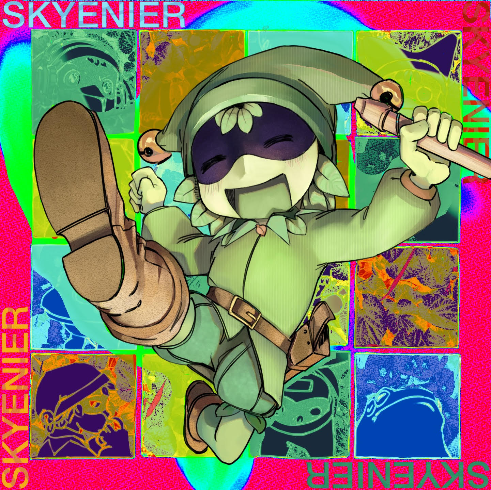
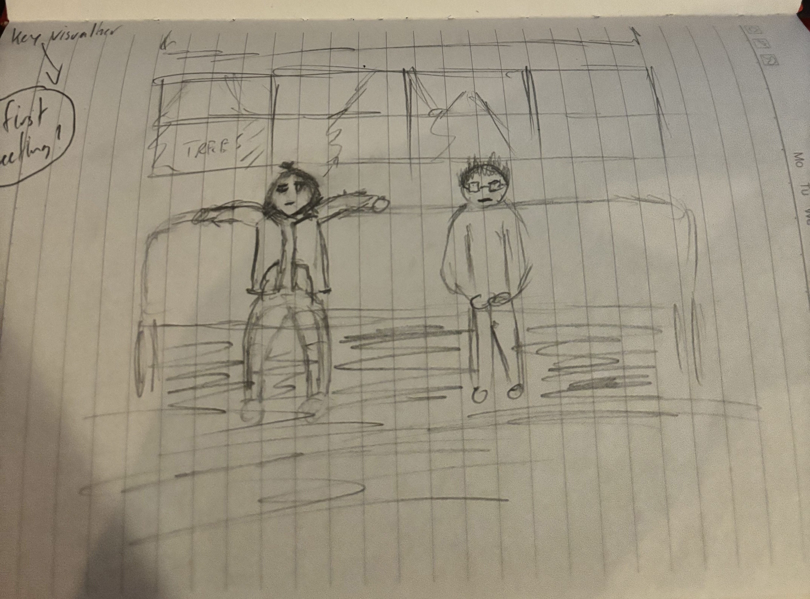
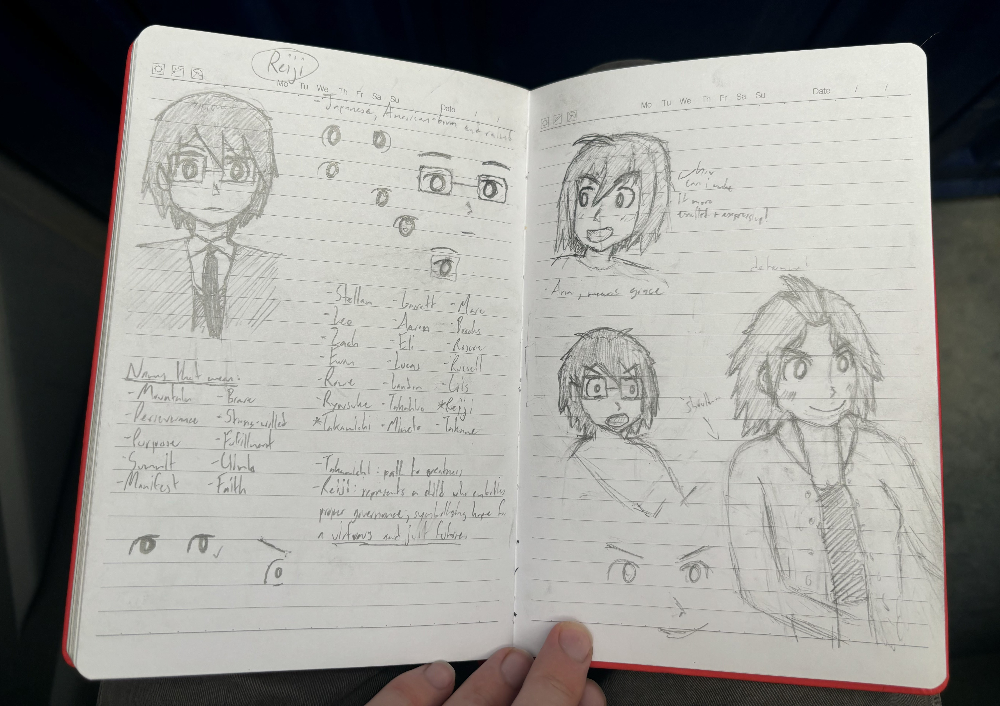
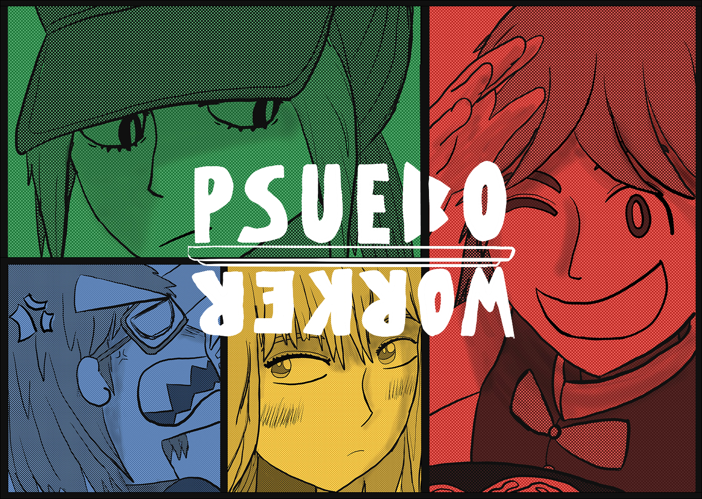

I used to be a kid who once had lots of ambition, but lost it all. Such a tragic story, isn't it?
Really, I was just heavily addicted to consuming media and rotting away in my room.
Thanks to my parents pushing me to start really thinking about my career, one day as I was pondering around in my room, I came up with an idea:
I'll become a soundtrack composer for indie games! Just like Lena Raine!
To me it all clicked, I have finally found something I can truly use that ambition I never use towards something. And it did, as since that day I worked hard to completely transform my life.
Well, sort of, I mean, I was still in my room all day, so that didn't change. But I grew to become a harder worker than before!
After a bit over a year of composing, starting a few unpaid revenue share gigs that didn't lead to finished games, I realized something.
This music stuff is really burning me out! And how am I gonna actually make money doing this??
Being an indie soundtrack composer is a tough gig, and after talks with my parents to help this 19 year old kid find some direction, I decided to start working full time.

Cover for Wisp Creek, a game soundtrack-style song I made.
One day I finally decided I wanted to grow up and join the workforce, so one day I can support a family. Luckily for me, I quickly found my first full time job working electrical at a commerical company.
I had zero experience in electrical or any trades! And I was hired immediately! And I'm getting paid great for having no experience?!? This is a dream!
Then I worked my first 10 hour shift. Then I worked my first 12 hour shift. Then I worked my first 56 hour week, with an hour commute. Monday through Saturday.
Ah, then I realized. This is why it was so easy to get in.
This electrical job, which I worked for only six months, became the most impactful decision of my entire life. I worked with an entirely different culture, where I was one of the few English speakers; I learned what true hard, long work is, and most importantly, I learned that after two months of working there, I wanted to become a game developer.
On a walk to my car, a long, annoying, twenty minute walk after a long tiring shift, I gazed into the sea of trees in the distance, and randomly, a vision popped into my head.
A quiet, black-haired man with glasses in a suit, sitting on a train next to a light brown-haired rebellious girl, with a guitar case to her side.
I envisioned a game. A game that if I had the skills, I would make this without a doubt. I fell in love with the idea. Working electrical opened me up to an entirely new world I never seen before, a sea of new perspectives, ideas and ways of thinking. Thinking about these things led to the fruition of what I call my dream game: Evergreen. A game all about meeting people to learn about new perspectives, to understand what it means to truly live.

My first ever drawing of what I envisioned for Evergreen.
I knew then I just had to learn how to make this game. But god, learning how to code? To draw? To write? I can't do any of that! But I'm not sure how it happened, it just did. I just couldn't resist learning how to make this game. It became my new top goal in life.
The biggest problem was time. I had almost none of it. I had only about 2-3 hours after my long 10-12 hour shifts to do anything creative. So, I had to get creative.
Any break I got, any bit of time where we weren't working for whatever reason it was, either waiting for approval from safety or our leaders, to waiting for our partners to get back from the bathroom, or just taking a breather, I would work towards this goal. Drawing, writing, studying from YouTube videos on my phone, I'd do whatever I could. It was truly the most motivated I had ever been in my life.
Before I worked on Evergreen, I decided it was smartest to work on other smaller projects first. My first ever game was named Project Sprout.
While, Sprout was never finished, it helped me learn so much about games. It isn't just programming, writing, and all the technical stuff, you have to be a leader, a listener, a communicator, and an unselfish person. The art of making a game has no bounds, it is truly beautiful to me.
Of course, working the way I was wasn't always going to be sustainable. So after six months of grinding and saving money, I took new paths in life into college, and now into a more simple full time job with a much lighter schedule. Of course, the whole process was way more complicated than that, but who wants to read even more than what is already being spewed on to the screen right now?

Concept sketches of Reiji and Ana, after a few months of teaching myself to draw.
Fast forward to today, and our first official game, Pseudoworker is in development. And noticed how I said our! This is no longer about me and doing things solo! My games would probably suck without the talents and ideas of other awesome people!
Currently, the team consists of Rob, the artist; and Spinmouse, the assistant (but really the better) programmer. These guys have committed for a grand total of zero dollars guaranteed, and all we want to do is make something truly special, and hopefully give anyone who plays a great experience, just like the games, anime, shows and books that have inspired us.
There is no set date for Pseudoworker to launch, but you will be damned to see us rush out a crappy, unfinished game. No no, don't be mistaken. We much rather keep ourselves in development hell by adding way too many ideas for our own good. It's all a part of the fun process of gamedev, y'know?

Promotional banner for Pseudoworker, drawn by Skyenier.